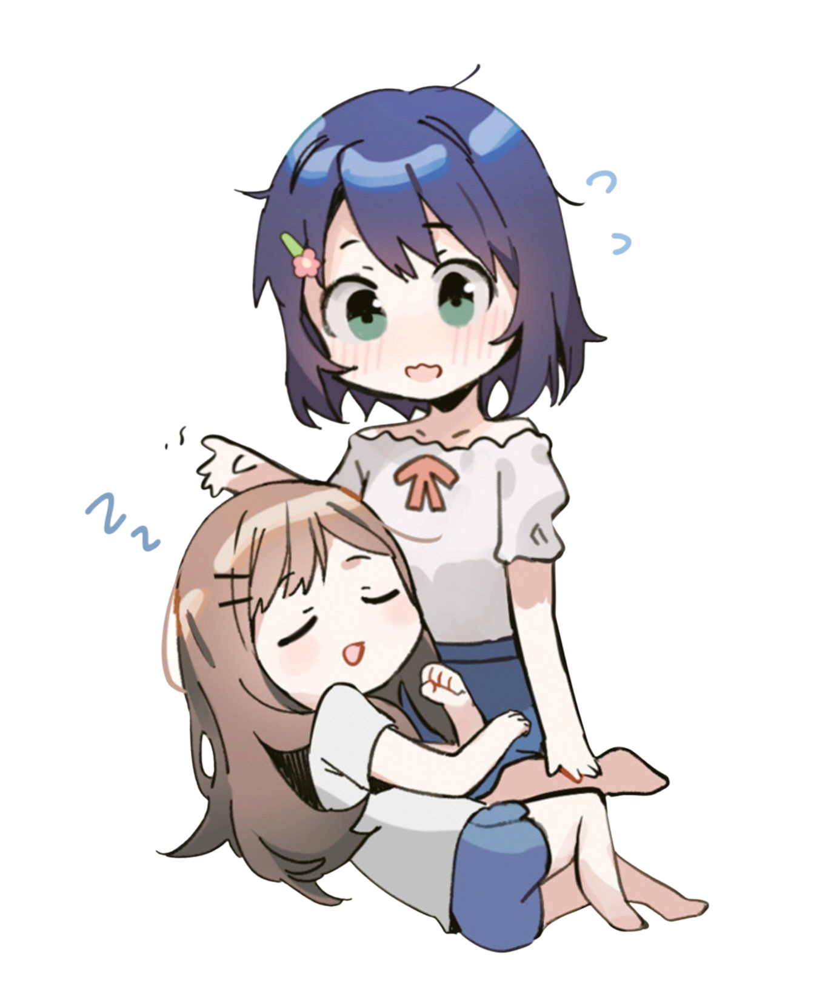

Arrastra las estrellas para desbloquear historias extra y mucho más

Las historias ya desbloqueadas y contenido adicional/exclusivo se encuentran dentro del PDF recopilatorio.
El cielo de Adashima está completo
¡Recompensa desbloqueada!
Texto de recompensa
Cómo jugar
Arrastra estrellas: Toca y mueve cualquier estrella libremente por el cielo.
Forma constelaciones: Acerca las estrellas a los puntos marcados para completar cada figura.
Desbloquea historias: Cada constelación completada habilita una historia especial del blog de Iruma relacionada con AdaShima.
Recompensa final: Al completar las 10 constelaciones obtendrás acceso a todas las historias y a 2 tarjetas especiales de información de Adachi y Shimamura.
Progreso guardado: Tu avance permanecerá almacenado automáticamente para que puedas volver después y descargar las historias o tarjetas sin necesidad de completar todo otra vez.
Mi perfil
Mi nombre es Adachi Sakura.
Shimamura me llama Adachi.
Mi cumpleaños es el 19 de octubre.
Mi signo zodiacal es Libra,
y mi tipo de sangre es A.
Me considero normal, pero Shimamura dice que soy rara.
Mi favorito
Comida
Mmm... Ninguna
Color
Colores suaves
Género literario
No se me ocurre nada
Persona
Shimamura
Rincón del “¿Y si…?”
¿En qué te gustaría renacer?
Cualquier animal que le guste más a Shimamura
Si pudieras tomar unas vacaciones de un año, ¿qué harías?
Ir a la casa de Shimamura
Rincón del AMOR
¿Hay alguien que te guste?
SÍNO
¿Te has confesado?
SÍNO
¿Cuál es tu tipo?
Shimamura
¿Cómo quieres que te llame tu pareja?
Adachi
¿Qué gesto acelera tu corazón?
Esos momentos ocasionales en los que ella ríe de todo corazón
¿A dónde te gustaría ir en una cita?
Aguas termales
Mi perfil
Mi nombre es Shimamura Hougetsu.
¡Todos me llaman Shimamura!
Mi cumpleaños es el 10 de abril.
Mi signo zodiacal es Aries,
y mi tipo de sangre es B.
En cuanto a mi personalidad, yo me considero una persona tranquila,
pero quienes me rodean suelen decir que soy apática.
Mi favorito
Comida
Okonomiyaki y huevos revueltos
Color
Azul
Género literario
Ciencia ficción
Persona
Mmm... ¿Alguien devoto?
Rincón del “¿Y si…?”
¿En qué te gustaría renacer?
Perro
Si pudieras tomar unas vacaciones de un año, ¿qué harías?
Adachi probablemente vendría todos los días, así que algo con ella
Rincón del AMOR
¿Hay alguien que te guste?
SíNo
¿Te has confesado?
SíNo
¿Cuál es tu tipo?
Personas como mi novia
¿Cómo quieres que te llame tu pareja?
Shimamura
¿Qué gesto acelera tu corazón?
Cuando se pone toda nerviosa y sonrojada, pero no aparta la mirada
¿A dónde te gustaría ir en una cita?
Algún lugar cerca del mar
¿Reiniciar las estrellas? Los desbloqueos se mantendrán.